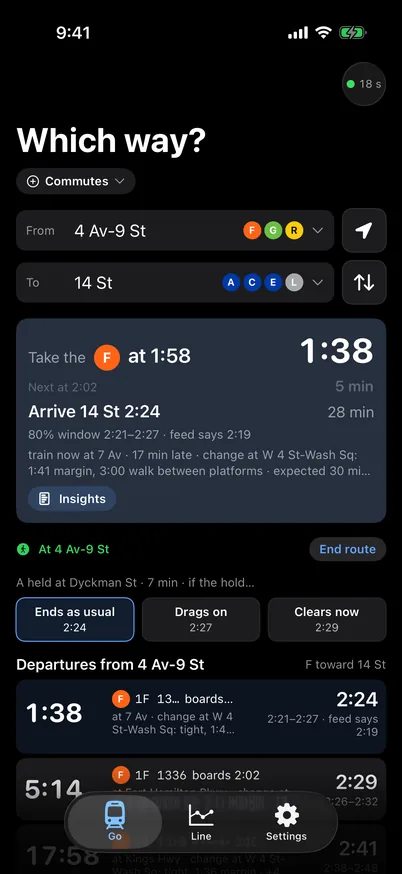
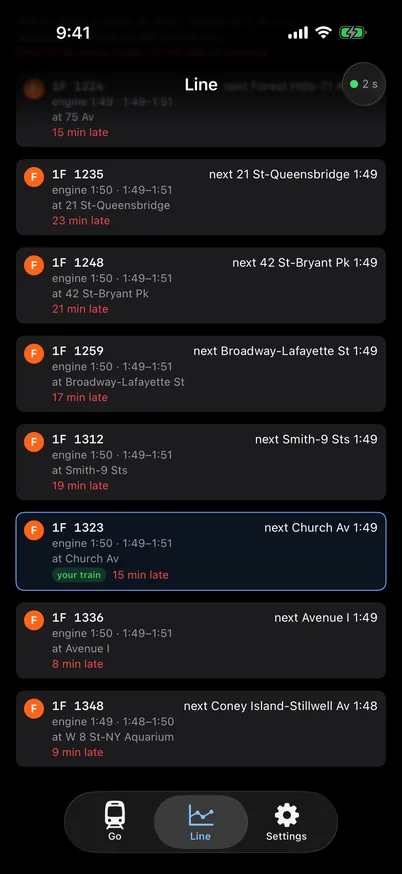
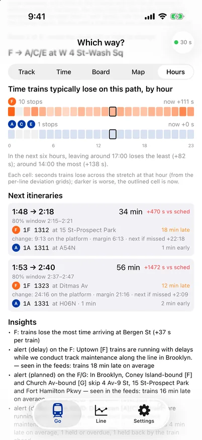
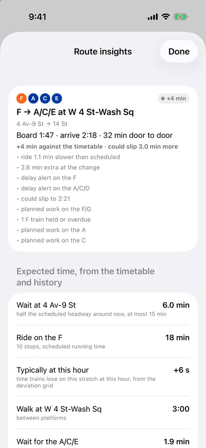

01 / The Now card
Names the train. Counts down to boarding.
The train to take, the countdown to your platform, and the arrival with its 80% window and the feed’s own time beside it. Your commute is already set when you open it.
WhichWay · New York City subway · iPhone
A subway assistant that reads the MTA’s own feeds every thirty seconds and runs a prediction engine on every train. It names the train to take, counts down to boarding at your platform, and gives the arrival its own 80% window.
The app
The screens are the app’s own, captured from the iOS Simulator against the live feeds.
01 / The Now card
The train to take, the countdown to your platform, and the arrival with its 80% window and the feed’s own time beside it. Your commute is already set when you open it.
02 / A train is held
When a train on your lines is held, see your arrival if the hold ends as holds here usually do, drags on to its 90th percentile, or clears now. One tap, and every time on screen moves with it.

03 / Every route
Direct or with one change, ranked by the next live arrival, each with the reason it runs late today and how tight the connection is.

04 / The line
Your line as a diagram, every train gliding between polls, held and overdue trains coloured, and the engine’s projection for the next hour: the largest gap forming and where.


05 / The map and the board
The line on the map with the stops you ride, each train where it should be right now; a departure board for your platform with every countdown, flag and change margin; and the hours of the day on this path.



06 / Insights
Where each time comes from: the timetable, the history, the train in the feed, and what the engine made of it. Nothing on screen is a black box.

The engine
The countdown clock runs about half a minute optimistic. WhichWay measures that error, learns how long a held train stays and how lateness carries down the line, blends it all into one arrival with a window, and scores every forecast against what happened.
Every number is from the engine’s published tables and its model report of 5 October 2026. The whole engine runs on the phone, and keeps planning underground.
The film
A run for the train: out of the door, down the street, into the subway and onto the platform as the train pulls in, phone in hand the whole way.
No account
Open it, pick a station, go. Your commutes and places stay on the phone.
No signal needed
Every file it fetches is kept, so it plans from the timetable and the saved tables when the signal goes.
Opt-in sensors
Switched on, the motion sensors learn how long you take to the platform and which train you really boarded. Nothing leaves the phone unless you share it.
It runs on iPhone, iOS 17 and later, on the lines the engine has calibrated so far, with more as the record grows. Ask for an invite.